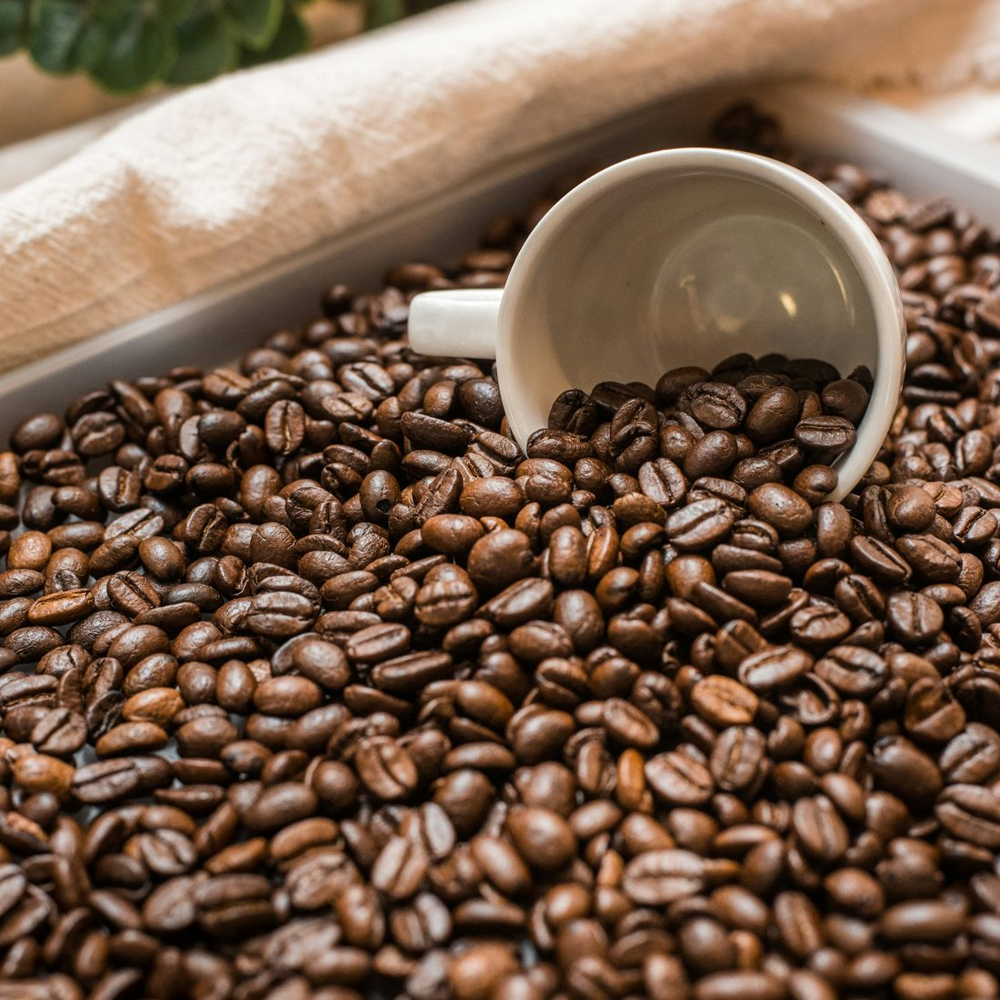
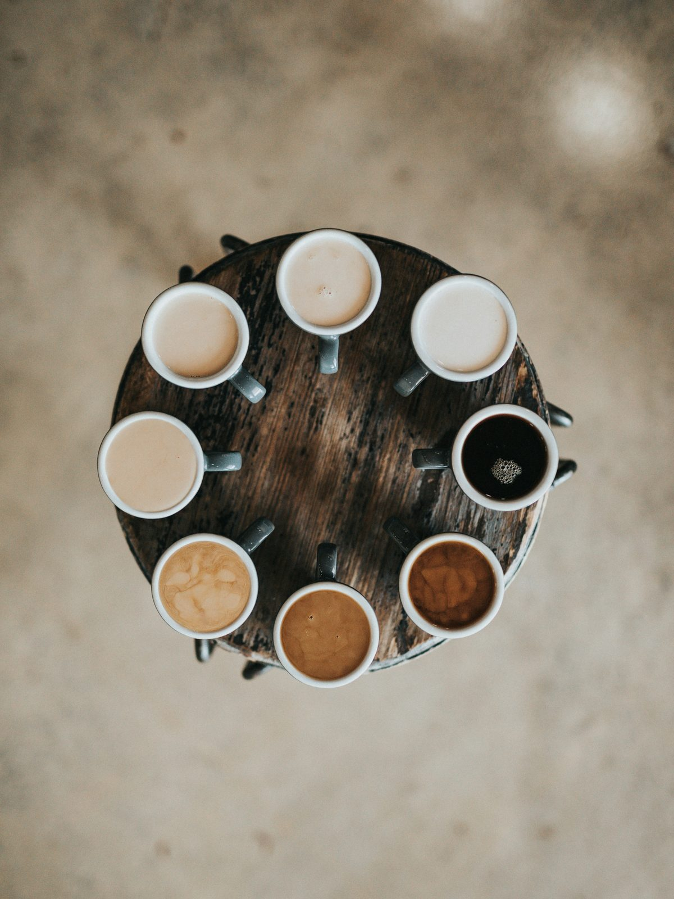
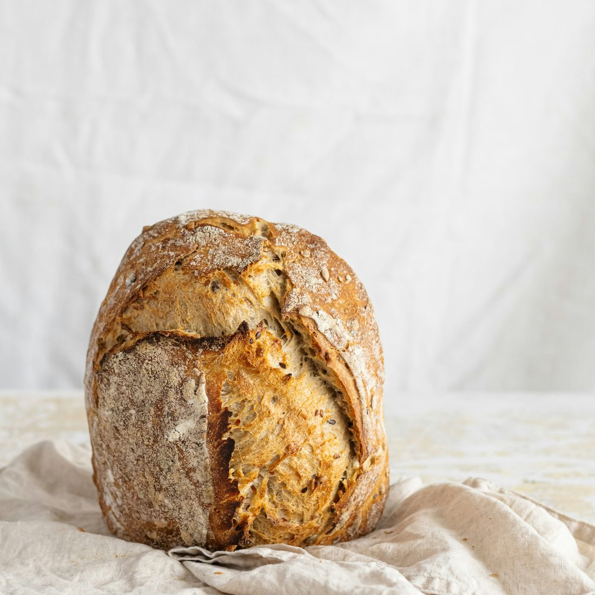
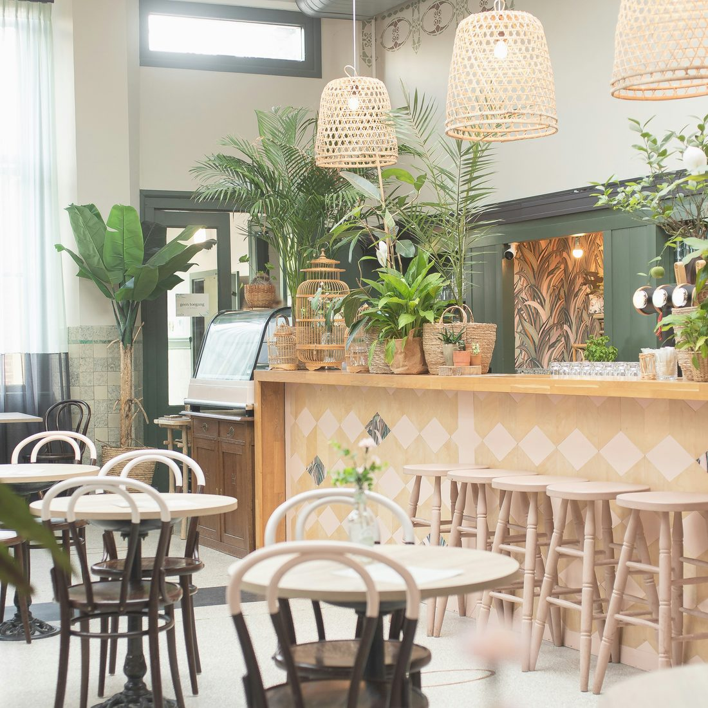

BEAN
豆は、週替わりで二種類
浅煎りは香りの立つエチオピア系を中心に、深煎りは窯出しのパンに合わせた自家ブレンド。5kg釜で週2回、店舗奥で焙煎しています。挽きたてをお持ち帰りいただけます。
朝八時、窯がひらく。
焼きたてと、一杯と。
BAKERY & COFFEE / OSAKA
自家製酵母の食パンと、浅煎りから深煎りまで週替わりのシングルオリジン。北堀江の路地で、焼き上がりの時間にあわせて豆を挽いています。

毎日食べるものだから、素材と工程は全部お伝えします。

BEAN
浅煎りは香りの立つエチオピア系を中心に、深煎りは窯出しのパンに合わせた自家ブレンド。5kg釜で週2回、店舗奥で焙煎しています。挽きたてをお持ち帰りいただけます。

BREAD
レーズンから起こした酵母を継いで8年。前日の夕方に仕込み、一晩かけてゆっくり発酵させます。粉は北海道産を基本に、食感にあわせて数種類を配合しています。

SHOP
イートインは10席。焼き上がりは1日3回、8時・12時・15時。Wi-Fiと電源をご用意していますので、近隣でお仕事の方もどうぞ。
スマートフォンからご覧の方は、そのまま経路案内へ進めます。